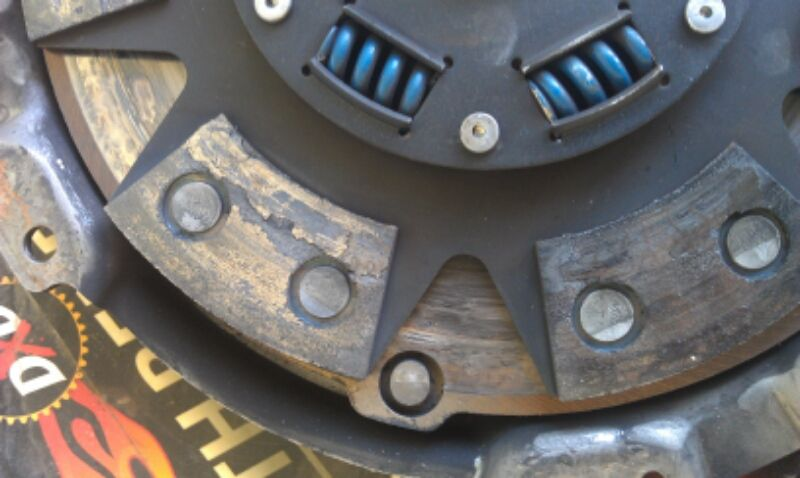

-
First of all I am working with southbend to find the issue exactly what caused this. This is a ceramic disc rated at 575 ft lbs. Also had the cyro treatment they offered. I was maybe maybe at most 450hp. Clutch had 2k miles on it. Used a new fidanza flywheel when installed. Broke in ran 14psi for most of its life until last 100 miles had some 22psi pulls. Never felt it slip once. Always grabbed great pedal felt awesome. Would have never guessed it looked like this if my motor didn't go and pulled swap out. Any ideas what went wrong and why it looks like this. Last 2 pics you can see where looks like the pads shifted and avg 1mm off high low and side to side all pads. Couple do match up even.

-
Show us the flywheel -
Flywheel and pressure plate will tell the story. Probably not torqued down evenly/ properly…also starting from a stop if you are slipping it or letting it shudder will do this after a while. Happens a lot with high load pp clutchesUsual Z31 suspect: Garage Queen (aka broken)

-
Torqued according to fsm. Never really felt it shutter. Most miles were highway to and from work.
-
South bend uses a "stepped" pressure plate to wear off and smooth to even during break in period. Personally I would send it back to SBC for them to look at and see what happened. Measure the pressure plate thickness all around and see if you still have that stepped lip because that would probably be your issue. You would then need to have SBC grind the flywheel and pp and lightly sand the clutch for proper re-break in. Make sure you put 800-1000 miles on it of VERY easy driving. I did 2 clutches, one on my z and one on my subaru. I learned that it was much better to never go into boost for over 1000 miles. I then rip on the car every day after I hit the benchmark…pulled the transmission a week later and it was broken in perfectly.Usual Z31 suspect: Garage Queen (aka broken)
-
i dont see much of an issue.
to me it looks like the pads were just drilled a little off, and when they were put together they weren't in perfect alignment all around the disc body itself. that's not anything to be concerned with. the pads still look like they're doing the job they're asked to do.
i would venture to guess that if it was holding well, and it wasn't causing issues- then it's probably pads that had high spots and sooner or later when they wear down a bit more they will be all showing an even wear pattern all the way across.
i don't think the pads shifted at all. you would be able to jiggle it with your hand due to elongation of the rivet holes.
the only issue I see is that one pad has an obvious low spot, which could either be a manufacturing defect which caused it to chip away a little (look for cracks), or it's just not fully worn down to an even surface yet.
this is an aggressive friction compound, so i would expect there to be heat marks in odd areas just as your flywheel and pressure plate is pictured- as there is no soft material to wear away as quickly as a less agressive disc, and provide a 100% smooth friction surface on both sides. It's like a hard stone. eventually it will sand down to a smooth surface.... just not yet.
you didn't have any slip issues, so I would say it's doing what it's supposed to. -
Those look like the old brake pads on my sebring, they were overheating because parts of the friction material were sticking to the rotor and deforming from the stress…
Like stated above, it likely needed a gentler break-in, or you just slipped it too much the way you drove it -
Careless, I disagree. You should not see heat spots like that. That looks like its been constantly slipped in traffic. Send it back, re-grind it and take it super easy for 1k miles. That clutch will have dramatically decreased life/holding capacity if left the way it is. Have SBC smooth the disc so its even as well. You might lose a few k miles by smoothing it, but its better than doing the same thing over again. I put way more heat on my set-up than this will see due to the high clamp load and I will never see burn scarring like this if properly broken in.Usual Z31 suspect: Garage Queen (aka broken)
-
I've pulled apart my share of transmissions, and most of the ones with uprated clutches combined with sintered steel face plates on lightweight flywheels had the same burning. you wouldn't see it on a factory flywheel because (my guess) the type of friction surface is different. on my factory clutch it was not an issue, on my fidanza with the sbc clutch, it was the same look as you see here, just a little less apparent. Probably because I had an SBC Stage 4 with the feramic pads instead of the ones pictured here (looks different). As well as an LT1 with a spec stage 3 clutch backed by a T56- same look.
In my opinion, I don't think it's a huge issue, as long as there is no cracking and no slipping. Over time it will smoothen itself out. Clutches are really never 100% flat until you drive them for like half a year.
When looking into these issues, it makes sense to think about race cars that have clutches replaced and go straight to the track to do their business. There is no time for break-in on those cars if you do it on a weeknight before a full weekend of racing.
To me, this is "normal abuse" for someone who pushes their car without breaking it in. If you don't break the clutch in "properly", that doesn't mean it won't work. It will just look like this, and take longer to look even all around. I see no reason to send anything back unless its under-performing or it's showing signs of imminent failure.
i wouldn't do anything to it. it also means by servicing it now, you'll get less life out of the flywheel surface. also.... out of the box, flywheels should be lightly resurfaced- because they aren't ever straight. I had mine done when it was balanced. maybe the cause of the slipping while driving is due to that.
again- it happens more often than people think. -
I'm pretty sure the heat spots change the way the material grips to the flywheel and as you stated, makes it more prone to cracking/slipping. If you have heat spots like that now they will just get worse down the line. Sure a race team might throw in a clutch and race on it, but they also probably use carbon clutches where you are directed to slip the clutch to break it in.
Take it or leave it - sure it may be fine keeping it like that, but don't complain when it starts to slip on you in a couple thousand miles if that. The right thing to do would be to send it back at least for inspection, but if you are one of those people who say "hey it works now, I'm just going to keep running it" then just stick it back in and see what happens. Report back with 10k miles on it (if you even get that much out of it).Usual Z31 suspect: Garage Queen (aka broken)
-
the problem with heat marks is that if you resurface the flywheel- you'll find that they are not skin deep. they go below the surface. you can't really "fix" heat marks. you're living with it whether you want to or not, unless you change the flywheel. this is why to me its not worth having it resurfaced. I'd hit it with 220grit roloc disc if anything to give it more bite. And then I'd just run it again. -
Yes it will forever change the tensile deeper in, but that's why once you catch the burn marks you grind it as soon as you can. It will only get worse otherwise. Note, I said Grind - not turn. it removes most of it and the biggest part - the mating surface.Usual Z31 suspect: Garage Queen (aka broken)
-
I sent pictures to sbc. Calling them back after work. Thete is no way going to run it the way it is. Also willneed to replace the flywheel. Deep grooves around it almost the shape of the pads. Was hard to get a picture of that. Also pressure plate is like that just not near as bad. -
you can just replace the sintered steel plate. you don't have to replace the entire flywheel. have it resurfaced after replacing. it's like 80 dollars vs 300 for a new one. replace the screws as well, and put some loctite on them. -
Ya I know can replace just the disc.

Copyright © 2006–. All rights reserved. Privacy Policy